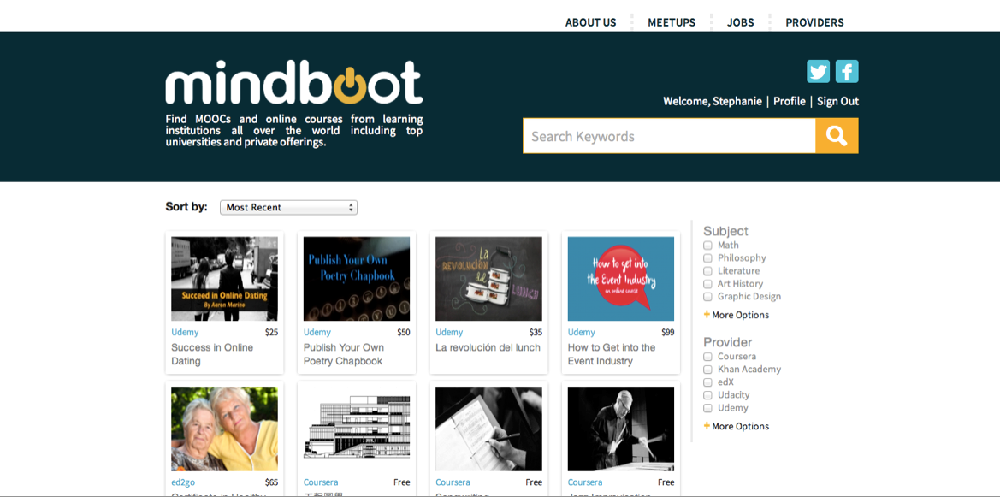
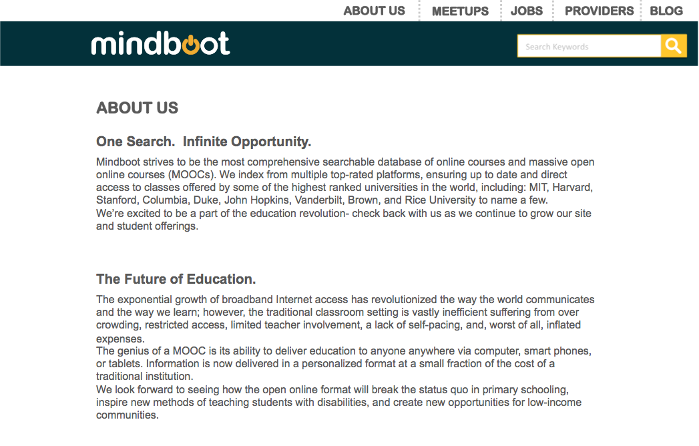
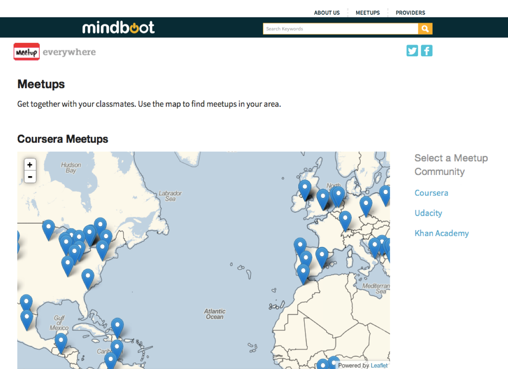
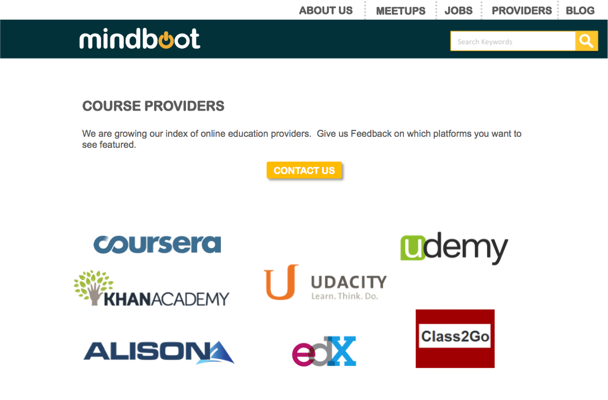

Scholarli
In 2013, I built a free aggregator website during the early months of the massive open online course (MOOC) movement called Mindboot. Courses from top universities and leading MOOC providers such as edX, Coursera, and Udacity were featured on the site in an easy to search, sort, and filter format. Users were also able to search nearby Meetup study groups or search STEM job listings. I took this idea from conception to launch designing the logo and creating wireframes for the programming team to deliver a highly functional site with optimum user experience.



